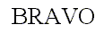
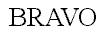
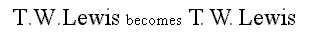
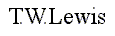

IV. Kerning
The term kerning refers to specific information used to adjust the relative positions of successive glyphs in a string of text. This section describes several types of kerning information, as well as the way to process them when performing text layout.
1. Kerning pairs
Kerning consists of modifying the spacing between two successive glyphs according to their outlines. For example, a ‘T’ and a ‘y’ can be easily moved closer, as the top of the ‘y’ fits nicely under the upper right bar of the ‘T’.
When laying out text with only their standard widths, some consecutive glyphs seem a bit too close or too distant. For example, the space between the ‘A’ and the ‘V’ in the following word seems a little wider than needed.

Compare this to the same word, where the distance between these two letters has been slightly reduced:

As you can see, this adjustment can make a great difference. Some font faces thus include a table containing kerning distances for a set of given glyph pairs for text layout.
-
The pairs are ordered, i.e., the space for pair ‘(A,V)’ isn't necessarily the space for pair ‘(V,A)’. They also use glyph indices, not character codes.
-
Kerning distances can be expressed in horizontal or vertical directions, depending on the layout and/or the script. For example, some horizontal layouts like Arabic can make use of vertical kerning adjustments between successive glyphs. A vertical script can have vertical kerning distances.
-
Kerning distances are expressed in grid units. They are usually oriented in the X axis, which means that a negative value indicates that two glyphs must be set closer in a horizontal layout.
Note that OpenType fonts (OTF) provide two distinct mechanisms for kerning, using the ‘kern’ and ‘GPOS’ tables, respectively, which are part of the OTF files. Older fonts only contain the former, while recent fonts contain both tables or even ‘GPOS’ data only. FreeType only supports kerning via the (rather simple) ‘kern’ table. For the interpretation of kerning data in the (highly sophisticated) ‘GPOS’ table you need a higher-level library like ICU or HarfBuzz since it can be context dependent (this is, the kerning may vary depending on the position within a text string, for example).
2. Applying kerning
Applying kerning when rendering text is a rather easy process. It merely consists in adding the scaled kern distance to the pen position before rendering the next glyph. However, the typographically correct renderer must take a few more details in consideration.
The ‘sliding dot’ problem is a good example: Many font faces include a kerning distance between capital letters like ‘T’ or ‘F’ and a following dot (‘.’), in order to slide the latter glyph just right to their main leg.

This sometimes requires additional adjustments between the dot and the letter following it, depending on the shapes of the enclosing letters. When applying ‘standard’ kerning adjustments, the previous sentence would become

This is clearly too contracted. The solution here, as exhibited in the first example, is to only slide the dots if the conditions fit. Of course, this requires a certain knowledge of the text's meaning, and this is exactly what ‘GPOS’ kerning is good for: Depending on the context, different kerning values can be applied to get a typographically correct result.
Last update: 07-Dec-2014